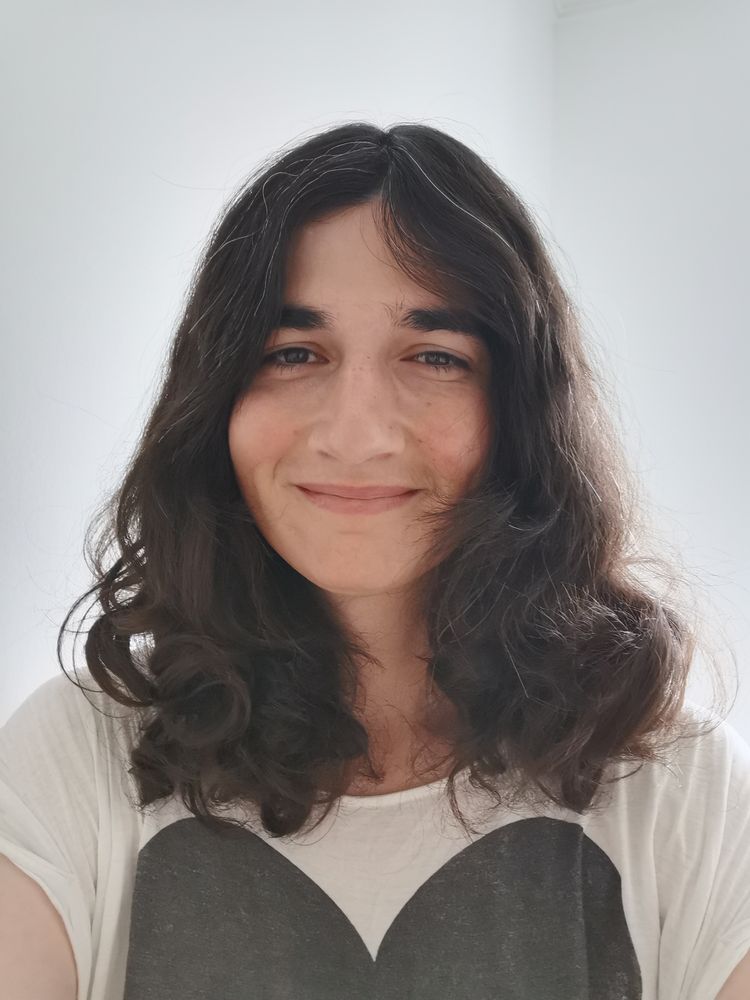

Profile
-
Hometown: Collonge-Bellerive, GE, Switzerland
Languages: English: (Native), French: (Native), Portuguese: (Native), German: (B1-B2), Japanese: (N3), and Danish: (A2).
Nationalities: Switzerland, USA, and Portugal
Research Interests: Programming Languages, Automated Testing, Hardware Verification, Concurrency.
Education
-
Princeton University, Princeton, NJ, USA
Doctor of Philosophy, PhD - Computer Science
Field: Programming Language Design
Aug. 2024 - Present -
ETH Zurich, Zürich, ZH, Switzerland
Master of Science, MSc - Computer Science
Major: Secure & Reliable Systems - Minor: Computer Graphics
Sep. 2021 - Apr. 2024 -
EPFL, Lausanne, VD, Switzerland
Bachelor of Science, BSc - Computer Science
Sep. 2016 - Sep. 2020
Current Projects
Industry Research Experience
-
SiFive
Compiler Engineer Intern
Manager: Andrew Lenharth
Brief: Designing an end-to-end compilation flow that unifies design and verification for high-level hardware languages in a modular and scalable way.
April 2024 to August 2024
( GitHub )
Academic Research Experience
-
UC Berkeley, EECS, SLICE Lab
Visiting Student Researcher
Advisor: Kevin Laeufer
Brief: Extended the CIRCT hardware compiler framework to allow for the use of formal verification constructs in higher level hardware construction languages. This research stay was in the context of my Master Thesis.
Fall 2023 - Spring 2024
( GitHub / Master Thesis ) -
Technical University of Denmark, DTU Compute, Embedded Systems Group
Research Assistant
Advisor: Martin Schoeberl
Brief: Created and developed the Chiselverify verification library for Chisel. This project adds functionalities such as Constraint Random Testing, Functional Coverage and Bus Functional Models to the Chisel ecosystem. A draft functional coverage driven mutation based fuzzer for digital circuits has also been developed in the scope of this project.
September 2020 to Decemeber 2020, and May 2021 to September 2021
( GitHub / Paper )
Teaching Experience
-
252-0061-00L: Systems Programming & Computer Architecture
ETH Zurich - Taught by Prof. Timothy Roscoe and Prof. Ana Klimovic
Role: Graduate Teaching Assistant
Tasks: Design and correct assignments, and teach weekly tutorial sessions.
Fall 2021 -
DTU 02155: Computer Architecture and Engineering
Technical University of Denmark - Taught by Prof. Martin Schoeberl
Role: Teaching Assistant
Tasks: Design and correct pen & paper assignments, and assist students in their hands-on lab work.
Fall 2020 -
CS-209: System-on-Chip Architecture
EPFL - Taught by Prof. Paolo Ienne
Role: Teaching Assistant
Tasks: Assist students in their hands-on lab work, and design and correct the final pen & paper exam.
Spring 2020 -
Logiscool: Introduction to Programming (10-15 yo)
Logiscool, Vevey
Role: Instructor
Tasks: Designed and taught an introductory programming course for middle-school students about game programming in JavaScript.
Every Semester from Fall 2018 to Spring 2020
Other Professional Experience
-
Univerrsità della Svizzera italiana
Game Developer / Research Assistant
Manager: Prof. Michael Multerer
Brief: Software Engineer for the SURE sustainable development project, where we are developing a video game illustrating the impacts of energy management decisions, as well as natural and societal disasters, on the Swiss energy grid.
June 2023 to April 2024
( GitHub ) -
GameLab UNIL-EPFL
Game Developer
Manager: Prof. Yannick Rochat
Brief: Game developer for the GameLab research group at the University of Lausanne. The goal was to define innovative ways utilize video games for education and as a form of archival media. We worked with teams from Digital Kingdom and LeTemps across a couple of projects including Lausanne 1830 and Quatre Apparts et un Confinement.
March 2020 to March 2023
( [Lausanne 1830, GitHub] / Quatre Apparts et un Confinement )
Publications
-
Formal Verification of Hardware using MLIR -- Apr'24
Amelia Dobis
Master Thesis ( Paper PDF / GitHub / DOI Link ) -
Verification of Chisel Hardware Designs with ChiselVerify -- Feb'23
Amelia Dobis, Kevin Laeufer, Hans Jakob Damsgaard, Tjark Petersen, Kasper Hesse, Enrico Tolotto, Simon Thye Andersen, Richard Lin, and Martin Schoeberl
Microprocessors and Microsystems ( Paper PDF / GitHub / DOI Link ) -
Enabling Coverage-Based Verification in Chisel -- May'22
Amelia Dobis, Hans Jakob Damsgaard, Enrico Tolotto, Kasper Hesse, Tjark Petersen, and Martin Schoeberl
ETS 2022 ( Paper PDF / GitHub / DOI Link ) -
Towards Functional Coverage-Driven Fuzzing for Chisel Designs -- Nov'21
Amelia Dobis, Tjark Petersen, and Martin Schoeberl
WOSET 2021 ( Paper PDF / GitHub ) -
ChiselVerify: An Open-Source Hardware Verification Library for Chisel and Scala -- Oct'21
Amelia Dobis, Tjark Petersen, Hans Jakob Damsgaard, Kasper Hesse, Enrico Tolotto, Simon Thye Andersen, Richard Lin, and Martin Schoeberl
Best Paper Award
NorCaS 2021 ( Paper PDF / GitHub / DOI Link )
Awards / Fellowships
-
Cornell Bowers Computing & Information Science (CIS) Dean’s Excellence Fellowship
Description: Fellowship awarded to graduate students with strong academic and personal contributions to the field of Computer Science.
February 2024 -
Swiss Game Award 2022 - Best Serious Game
Description: Our game "Lausanne 1830: Histoires de registres" was chosen out of 8 different nominated games at the Swiss Game Awards 2022, by a jury of experts from Nvidia and the gaming industry, to be the best serious game.
November 2022 -
NorCaS 2021 - Best Paper Award
Description: This was awarded for our paper entitled "ChiselVerify: An Open-Source Hardware Verification Library for Chisel and Scala". The award is given out to the paper of highest scientific and technical quality of the NorCaS 2021 conference. This is voted on both by the public attending the conference, as well as the conference's reviewing committee.
October 2021
Review / Editorial Appointments
-
DSD’2024 (27th Euromicro Conference on Digital System Design)
Prgram Committee Member
Description: I was part of the committee which reviews and selects the submitted research works that were presented and published at the DDVC (Digital Design and Verification with Chisel) session of the DSD’2024 conference. This second invitation was a result of my continued contributions to the fields of hardware verification and programming language design.
June 2024 -
VALID’2023 (15th International Conference on Advances in Systems Testing and Validation Lifecycles)
Prgram Committee Member
Description: I was part of the committee which reviews and selects the submitted research works that were presented and published at the VALID 2023 conference. I focused on reviewing papers which related to novel validation methods for emerging fields such as autonomous vehicles and other modern computer vision applications. This appointment came as a result of my active research and expertise in the field of Automated testing and verification.
September 2023 -
DSD’2023 (26th Euromicro Conference on Digital System Design)
Prgram Committee Member
Description: I was part of the committee which reviews and selects the submitted research works that were presented and published at the DDVC (Digital Design and Verification with Chisel) session of the DSD’2023 conference. This invitation came as a result of my active research and expertise in the field of Automated testing and hardware verification.
June 2023
In-Person Conferences / Workshops
-
PLDI 2024 (SIGPLAN Conference on Programming Language Design and Implementation) -- Copenhagen, Denmark
Attendee
Atternded PLMW (Programming Languages Mentorship Workshop) hosted at PLDI. This also allowed me to attend the rest of the conference.
June 21-25 2024 -
ETS 2022 (IEEE European Test Symposium) -- Barcelona, Spain
Accepted Paper Long Presentation
Attended the conference to give a long presentation of my accepted paper "Enabling Coverage-Based Verification in Chisel".
May 23-27 2022